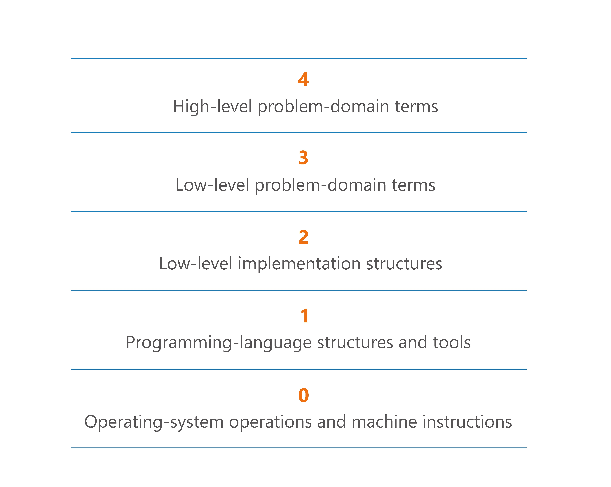

Item 26: Each function should be written in terms of a single level of abstraction
A computer is an extremely complex device, but we can work with it thanks to the fact that its complexity was split into different elements in distinct layers.
From a programmer’s perspective, the lowest abstraction layer of a computer is hardware. Going up, since we generally write code for processors, the next interesting layer is a processor control commands. For readability, they are expressed in a very simple language that is one-to-one translated into those commands. This language is called Assembly. Programming in the Assembly language is difficult, and it is absolutely unthinkable to build today’s applications this way. To simplify programming, engineers introduced a compiler: a program that translates one language into another (generally a lower-level one). First compilers were written in the Assembly language, and they translated code written as text into Assembly instructions. This is how the first higher-level languages were created. They were in turn used to write compilers for better languages. Thus, introducing C, C++ and other high-level languages. These languages are used to write programs and applications. Later, the concepts of the abstract machine and interpreted languages were invented and it is hard to place languages like Java or JavaScript on this pyramid, but the general notion of abstraction layers stayed as an idea.
The big advantage of having well-separated layers is that when one operates on a specific layer, they can rely on lower levels working as expected, removing the need to fully understand the details. We can program without knowing anything about assembler or JVM bytecode. This is very convenient. Similarly, when assembler or JVM bytecode needs to change, they don’t need to worry about changing applications as long as creators adjust the upper layer - what native languages or Java are compiled to. Programmers operate on a single layer, often building for upper layers. This is all developers need to know and it is very convenient.

Level of abstraction
As you can see, layers were built upon layers in computer science. This is why computer scientists started distinguishing how high-level something is. The higher the level, the further from physics. In programming, we say that the higher the level, the further from the processor. The higher the level, the fewer details we need to worry about. But you are trading this simplicity with a lack of control. In C, memory management is an important part of your job. In Java, the Garbage Collector handles it automatically for you, but optimizing memory usage is much harder.
Single Level of Abstraction principle
Just like computer science problems were extracted into separate layers, we can create abstractions in our code as well. The most basic tool we use for that is a function. Also, the same as in computers, we prefer to operate on a single level of abstraction at a time. This is why the programming community developed the “Single Level of Abstraction” principle that states that: Each function should be written in terms of a single level of abstraction.
Imagine that you need to create a class to represent a coffee machine with a single button to make coffee. Making coffee is a complex operation that needs many different parts of a coffee machine. We’ll represent it by a class with a single function named makeCoffee. We could definitely implement all the necessary logic inside that unique function:
class CoffeeMachine {
fun makeCoffee() {
// Declarations of hundreds of variables
// Complex logic to coordinate everything
// with many low-level optimizations
}
}
This function could have hundreds of lines. Believe me, I’ve seen such things. Especially in old programs. Such functions are absolutely unreadable. It would be really hard to understand the general behavior of the function because, when we read it, we would constantly focus our attention on the details. It would also be hard to find anything. Just imagine that you are asked to make a small modification, like to modify the temperature of the water, and to do that, you would probably need to understand this whole function, and it would be absurdly hard. Our memory is limited and we do not want a programmer to waste time on the unnecessary details. This is why it is better to extract high-level steps as separate functions:
class CoffeeMachine {
fun makeCoffee() {
boilWater()
brewCoffee()
pourCoffee()
pourMilk()
}
private fun boilWater() {
// ...
}
private fun brewCoffee() {
// ...
}
private fun pourCoffee() {
// ...
}
private fun pourMilk() {
// ...
}
}
Now you can clearly see what the general flow of this function is. Those private functions are just like chapters in a book. Thanks to that, if you need to change something, you can jump directly where it is implemented. We just extracted higher-level procedures, which greatly simplified the comprehension of our first procedure. We made it readable, and if someone wanted to understand it at a lower level, they can just jump there and read it. By extracting very simple abstractions, we improved readability.
Following this rule, all these new functions should be just as simple. This is a general rule - functions should be small and have a minimal number of responsibilities. If one of them is more complex, we should extract intermediary abstractions. As a result, we should achieve many small and readable functions, all localized at a single level of abstraction. At every level of abstraction we operate on abstract terms (methods and classes) and if you want to clarify them, you can always jump into their definition (in IntelliJ or Android Studio, holding the Ctrl key [Command on Mac] while you click on the function name will take you to the implementation). This way we lose nothing from extracting those functions, and make our code more readable.
Additional bonus is that functions extracted this way are easier to reuse and test. Say that we now need to make a separate function to produce espresso coffee and the difference is that it does not have milk. When parts of the process are extracted, we can now reuse them easily:
fun makeEspressoCoffee() {
boilWater()
brewCoffee()
pourCoffee()
}
It is also so that we can now unit test separately smaller functions like boilWater or brewCoffee, instead of more complex functions like makeCoffee or makeEspressoCoffee.
Abstraction levels in program architecture
The notion of layers of abstractions is also applicable to higher levels than functions. We separate abstraction to hide details of a subsystem, allowing the separation of concerns to facilitate interoperability and platform independence. It means defining higher levels in problem-domain terms.

This notion is also important when we design modular systems. Separated modules are a strong separation that can hide layer-specific elements. When we write applications, the general understanding is that those modules that represent input or output (views is frontend, HTTP request handlers on the backend) are lower-layer modules. On the other hand, those representing use cases and business logic are higher-level layers.
We say that projects with well-separated layers stratified. In a well-stratified project, one can view the system at any single level and get a consistent view. Stratification is generally desired in programs.
Summary
Making separate abstraction layers is a popular concept used in programming. It helps us organize knowledge and hide details of a subsystem, allowing the separation of concerns to facilitate interoperability and platform independence. We separate abstractions in many ways, like functions, classes, modules. We should try not to make any of those layers too big. Smaller abstractions operating on a single layer are easier to understand. The general notion of abstraction level is that the closer to concrete actions, processor or input/output, the lower level it is. In a lower abstraction layers we define a language of terms (API) for a higher layer or layers.